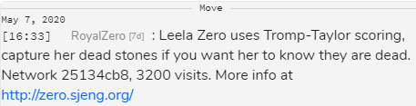

I am playing go against RoyalZero. I'm black and RoyalZero is white. It is a correspondence game, so I'll have a lot of time to think about my moves.
I am planning on using a few resources to help me as I'm playing against it (don't worry, it's not a ranked game), because I'm only about a 20 kyu player while RoyalZero is rated at 7 dan on Online-Go.com (I don't really know that much about it, but it's probably at a professional level of play to be honest). I plan on looking at a joseki dictionary in the opening, as well as using the analyze feature in Online-Go.com to look at different variations. I may also use AI programs to estimate who is winning. I will not however be just using a move someone else has made for me, for example I won't give the game to Leela Zero and ask what the next best move is, or just ask another person too. I want to make everyone move myself.
I want this to be a learning experience for myself and anyone else who may be reading this, so I will give some personal comments on each move of the game.
With that, let's get started. Good luck and have fun RoyalZero!
RoyalZero is, like I said in the introduction, rated at 7 dan on Online-Go.com. I think it's one of the strongest bots on the website, and it's probably at around a professional level (though I'm not sure about that). I have played against kata-bot (which is also rated at 7 dan) in a few games, mostly on 9x9 boards and it's really insane. I think RoyalZero will be similar to that.
For my first move I'll be playing at the 4x4 point, because I want to get a stake in the corner while also playing for influence. I think the 4x4 point is the most common opening move in 19x19 go. Let's see what RoyalZero does.
RoyalZero sent a message when they played their first move:
I guess RoyalZero is an implementation of Leela Zero. I'm not sure what that message means exactly, it won't know if some stones are dead unless I capture them? Will it try to continue playing in that area if it thinks the stones are alive but they're actually dead? I'm not really sure what that means, but I guess we'll find out as the game progresses.
Anyways, it looks like she played at the 4x4 point in the lower-left hand corner. She actually played pretty quickly, which makes sense because the bot is always online I guess. So I can probably expect to use a lot more time than her, and to have her respond fairly quickly after I make a move.
With her move, I still have options to play at Q4 or D16 and possibly set up a sanrensei opening. Apparently that opening isn't very popular among professional players now but I just like how it looks. I kind of like to have a large moyo of stones in my games. I kind of expect that RoyalZero will do a 3x3 invasion very quickly after the corners are taken, as that seems to be the style of play most strong AIs like (and professional players too).
I feel like I want to play in the lower-right hand corner, but I'm not sure if I should play at Q3 to secure the corner and prevent a 3x3 invasion or just play at Q4 and hope to set up a sanrensei. I'm not really familiar with 3x4 openings, as I'm mostly used to playing at 4x4 in the beginning. I might need to think about this some more. When I make my next move I'll give an explanation to why I did what I did, but most probably I'll be playing somewhere in the lower-right hand corner.